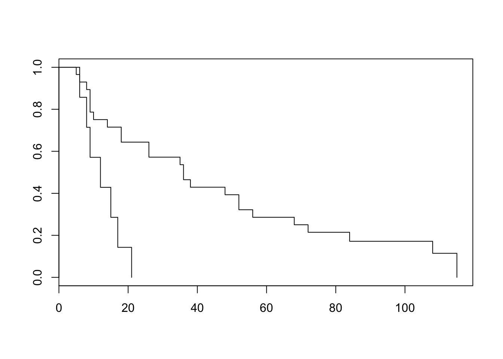

Assignments week 2 for Classical Methods in Data Analysis
Wouter van Amsterdam
2017-10-29
Last updated: 2017-11-03
Code version: 35a4a09
Day 5: ANOVA and non-parametric methods
Exercises without SPSS or R
1.
Twelve plots of land were randomly divided into three groups of four plots. Two fertilizers, A and B, are applied for the cultivation of wheat while the third group C serves as a control group, without application of fertilizer. The wheat yields are as follows:
yields <- matrix(c(72, 74, 60,
67, 78, 64,
60, 72, 65,
66, 68, 55),
nrow = 4, byrow = T,
dimnames = list(1:4, c("A", "B", "C")))
yields A B C
1 72 74 60
2 67 78 64
3 60 72 65
4 66 68 55
- How would you perform the randomization for this study?
Randomize assignment to fertilizers or control. Perform double blinding, including ‘placebo’ fertilizer.
The following ANOVA table was produced on the basis of data above:
Sum of Squares df Mean Square F p-value Between Groups 289.50 ? ? ? 0.015 Within Groups 186.75 ? ?
Total 476.25 ?
- Fill in the missing parts of the ANOVA table. See if you can find the p-value in the F tables.
Recall that:
\[df_{total} = \sum{(n_j)}-1\] \[df_{within} = \sum({n_j-1})\] \[df_{between} = J-1\]
Here \(J = 3\) the number of groups.
n_total = length(yields)
n_groups = ncol(yields)
n_pergroup = nrow(yields)
sum_squares <- function(x) sum((x-mean(x))^2)
ss_total = sum_squares(as.vector(yields))
ss_within = sum(apply(yields, 2, sum_squares)) # this applies 'sum_squares' to each column of yields
ss_between = sum(n_pergroup*((colMeans(yields) - mean(yields))^2))
df_total = n_total - 1
df_within = 3*(n_pergroup - 1)
df_between = n_groups - 1
ms_within = ss_within / df_within
ms_between = ss_between / df_between
f_value = ms_between / ms_within
qf(p = 0.95, df1 = df_between, df2 = df_within)[1] 4.256495So here \(a = 2\) and \(b = 9\).
- Test the null hypothesis that there is no difference among the three treatments A, B and C, meaning that the use of fertilizers under the conditions of the experiment has no effect.
pf(q = f_value, df1 = df_between, df2 = df_within, lower.tail = F)[1] 0.01480523
- If no significant overall result had been found by ANOVA, would the result of multiple post-hoc tests be valid?
No, this is only meaningful when there is an overall effect found.
Now replicate with built-in anova:
yields_melted = data.frame(group = rep(c("A", "B", "C"), each = 4),
yield = as.vector(yields))
yields_melted group yield
1 A 72
2 A 67
3 A 60
4 A 66
5 B 74
6 B 78
7 B 72
8 B 68
9 C 60
10 C 64
11 C 65
12 C 55summary(aov(yield~group, data = yields_melted)) Df Sum Sq Mean Sq F value Pr(>F)
group 2 289.5 144.75 6.976 0.0148 *
Residuals 9 186.8 20.75
---
Signif. codes: 0 '***' 0.001 '**' 0.01 '*' 0.05 '.' 0.1 ' ' 12.
The aim of a certain survey in a hospital was to compare the waiting times of patients in two clinics. The waiting times (in minutes) were as follows:
load(amstR::fromParentDir("data/clinic.RData"))
summary(clinic) TIME CLINIC
Min. : 4.00 clinic 1:61
1st Qu.:11.00 clinic 2:11
Median :16.00 NA's : 1
Mean :18.94
3rd Qu.:21.00
Max. :90.00
NA's :1 Looks like there is a row with only missing values, let’s remove that row.
clinic[is.na(clinic$TIME),] TIME CLINIC
73 NA <NA>full_clinic <- clinic
clinic <- clinic[!is.na(clinic$TIME),]Create plots of the densities
require(ggplot2)Loading required package: ggplot2ggplot(clinic, aes(x = TIME, fill = CLINIC)) +
geom_density(alpha = .7)
Both distributions of waiting times seem approximately normally distributed, with some right skewness and (of course) a lower bound of (>)0.
What are the problems when you compare these data? What type of analysis would you prefer? Which questions exactly are answered with your analysis? What would you do if some waiting times were ‘censored’ because patients left the hospital? The data are given in the file clinic.sav or clinic.RData, if you want to easily get some descriptive statistics to help you answer the questions above.
Both groups are of unequal size, and their variances seem to differ. This will cause troubles with ANOVA as it violates homoscedasticity. Since these are left-bounded varaibles, they seem approximately poisson-distributed. Currently we have no tools to deal with censored data. The most straightforward approach seems to be to do a Welch unpaired two-sample T-test (Welch = no equal variance assumption). We could look at the Wilcoxon rank sum test or the Mann-Whitney test. These tests do not require normality, however they do require homoscedasticity. Looking at the distributions of our data, heteroscedasticity seems to be a bigger problem than non-normality.
t.test(TIME ~ CLINIC, data = clinic, paired = F, var.equal = F)
Welch Two Sample t-test
data: TIME by CLINIC
t = -2.1655, df = 10.724, p-value = 0.05381
alternative hypothesis: true difference in means is not equal to 0
95 percent confidence interval:
-32.8550782 0.3185656
sample estimates:
mean in group clinic 1 mean in group clinic 2
16.45902 32.72727 Check distribution of residuals
fit <- lm(TIME~CLINIC, data = clinic)
plot(fit, which = 2)
The residuals are higher than expected on the upper side of the distribution, which indicates right skewed data, as could be seen from the density plots.
Exercises in R
9.
Answer the research questions from exercise #1, but now in R (use dataset wheat.RData). a. Make sure to perform a complete analysis, including checking the model assumptions.
Perform ANOVA
load(amstR::fromParentDir("data/wheat.RData"))
fit <- aov(YIELD~FERTILIZ, data = wheat)
summary(fit) Df Sum Sq Mean Sq F value Pr(>F)
FERTILIZ 2 289.5 144.75 6.976 0.0148 *
Residuals 9 186.8 20.75
---
Signif. codes: 0 '***' 0.001 '**' 0.01 '*' 0.05 '.' 0.1 ' ' 1pairwise.t.test(wheat$YIELD, wheat$FERTILIZ, p.adj = "none")
Pairwise comparisons using t tests with pooled SD
data: wheat$YIELD and wheat$FERTILIZ
A B
B 0.0656 -
C 0.1376 0.0047
P value adjustment method: none Dunnay post-hoc analysis (comparing with a basline) is not available in R We used no p-value adjustment, since only two comparisons were performed that are of interest: A vs C and B vs C. However, we could apply Bonferroni adjustment by taking these p-values and multiplying them by 2 (instead of 3 for aforementioned reasons).
Check assumptions: Normal distribution of residuals Recall that the lm function is used for linear regression. In our case of a interval outcome variable and a categorical independent variable, it calculates the mean for each level of our independent variable. The resulting residuals are the difference between the observed value and the mean for the corresponding group. So these are exactly the same as for the ANOVA method, and can be used to easily get the residuals from our model.
fit <- lm(YIELD~FERTILIZ, data = wheat)
plot(fit, which = c(1,2))

- From the first plot (fitted vs residuals), we can see that the spread is more or less the same for each group, so homoscedasticity seems to hold.
- From the second plot, we see that the residuals fit the normal distribution quite OK, exept for the lower tail, where it seems that the actual values are a little lower than what would be expected from a normal distribution.
- Independence of observations can not be checked from the data, but should follow from the study design
- How does the output for this analysis compare to the output for the same analysis in SPSS?
The same F-value and p-value are calculated. Comparing with SPSS, this table does not include a row for ‘total’.
10. Starfish
Answer the research questions from exercise #3, but now in R (use dataset starfish.RData).
- To study the reproductive cycle of a specific species of starfish, individuals from two different locations were observed. To check whether the populations of starfishes at the two places differ in the mean metabole, two random samples were compared. The data has been saved in the file starfish.sav.
- Perform an independent samples t-test to test whether the mean metabole differs between the two locations and comment on the result.
load(amstR::fromParentDir("data/starfish.RData"))
t.test(metabole~location, data = starfish, var.equal = F, paired = F)
Welch Two Sample t-test
data: metabole by location
t = -0.71322, df = 10.254, p-value = 0.4916
alternative hypothesis: true difference in means is not equal to 0
95 percent confidence interval:
-11.459307 5.887879
sample estimates:
mean in group A mean in group B
170.7143 173.5000 t.test(metabole~location, data = starfish, var.equal = T, paired = F)
Two Sample t-test
data: metabole by location
t = -0.71937, df = 11, p-value = 0.4869
alternative hypothesis: true difference in means is not equal to 0
95 percent confidence interval:
-11.308907 5.737478
sample estimates:
mean in group A mean in group B
170.7143 173.5000
- Also perform a one-way analysis of variance and compare this with the result from a).
summary(aov(metabole~location, data = starfish)) Df Sum Sq Mean Sq F value Pr(>F)
location 1 25.1 25.07 0.517 0.487
Residuals 11 532.9 48.45 For a single independent variable with only 2-levels, the one-way ANOVA is equivalent to the unpaired two-sample T-test, assuming equal variance.
- What is the relation between the t-value of the t-test and the F-value of the ANOVA?
t.test(metabole~location, data = starfish, var.equal = T, paired = F)$statistic^2 t
0.517491 The F-value is the squared t-value.
11. Sleep
This exercise uses the built-in dataset sleep. a. Load the built-in dataset sleep into your workspace: data(sleep). (Type help(sleep) for information on the study design.)
data(sleep)
- Make a boxplot and QQ-plot of the difference in extra hours of sleep for the two drugs for each patient.
Note that these are paired data
diff = sleep[sleep$group == "1", "extra"] - sleep[sleep$group == "2", "extra"]
boxplot(diff)
qqnorm(diff)
qqline(diff, col = "red")
Looks pretty normally distributed.
- Which parametric test would you want to use to detect a difference in sleep for the two drugs? Is this test allowed? Would a non-parametric test be allowed here?
A paired t-test could be used. The differences look pretty normally distributed. Otherwiss the Wilcoxon signed rank test could be used, assuming independent samples.
t.test(extra~group, data = sleep)
Welch Two Sample t-test
data: extra by group
t = -1.8608, df = 17.776, p-value = 0.07939
alternative hypothesis: true difference in means is not equal to 0
95 percent confidence interval:
-3.3654832 0.2054832
sample estimates:
mean in group 1 mean in group 2
0.75 2.33 wilcox.test(extra~group, data = sleep)Warning in wilcox.test.default(x = c(0.7, -1.6, -0.2, -1.2, -0.1, 3.4,
3.7, : cannot compute exact p-value with ties
Wilcoxon rank sum test with continuity correction
data: extra by group
W = 25.5, p-value = 0.06933
alternative hypothesis: true location shift is not equal to 0
- Open the dataset water.RData. The dataset describes mortality and drinking water hardness for 61 cities in England and Wales. The column mortality is the averaged annual mortality per 100000 male inhabitants and the column hardness represents the calcium concentration (in parts per million). The meaning of the remaining columns is self-explanatory.
- Make a boxplot in which the hardness of the water in northern and southern regions is compared.
load(amstR::fromParentDir("data/water.RData"))
str(water)'data.frame': 61 obs. of 4 variables:
$ location : Factor w/ 2 levels "North","South": 2 1 2 1 1 1 1 2 1 2 ...
$ town : chr "Bath" "Birkenhead" "Birmingham" "Blackburn" ...
$ mortality: int 1247 1668 1466 1800 1609 1558 1807 1299 1637 1359 ...
$ hardness : int 105 17 5 14 18 10 15 78 10 84 ...boxplot(hardness~location, data = water)
- Compare the hardness of water in northern and southern regions in a t-test. Are the conditions of a t-test met?
t.test(hardness~location, data = water, var.equal = F, paired = F)
Welch Two Sample t-test
data: hardness by location
t = -4.3432, df = 40.136, p-value = 9.284e-05
alternative hypothesis: true difference in means is not equal to 0
95 percent confidence interval:
-57.68764 -21.05082
sample estimates:
mean in group North mean in group South
30.40000 69.76923 Equal variance does not have to be assumed. Normality of residuals however does need to be assumed. Inspect them with a QQ-plot:
plot(lm(hardness~location, data = water), which = 2)
Does not look all too bad.
- Could you use a non-parametric test instead of the t-test in part b)?
The variance in the South region is much higher than in the North region, this violates the assumptions from the Wilcoxon rank-sum test and the Mann-Whitney test, so no.
13. Student incomes
This is a repeat of exercise #8, but now in R. In the dataset incomes.RData the column income represents a (would-be) sample of incomes for 100 randomly chosen students in Utrecht. The aim of this exercise is to make you aware of the risks involved when using transformation techniques in parametric statistics. a. Compute the mean income in this sample.
load(amstR::fromParentDir("data/incomes.RData"))
str(incomes)'data.frame': 100 obs. of 1 variable:
$ income: num 486 1235 233 462 723 ...mean(incomes$income)[1] 685
- Ignoring all conditions, compute a 95% confidence interval for the mean income of all students in Utrecht.
t.test(incomes$income)$conf.int[1] 529.4857 840.5142
attr(,"conf.level")
[1] 0.95
- Is the interval found in b) reliable?
This interval should be reliable when the income in the population is normally distributed, or when the central-limit theorem helps us. First take a look at the distribution of our sample
hist(incomes$income)These are highly skewed, now it is hard to know whether the central limit theorem will help us. We could try bootstrapping to see if our sample-mean looks T-distributed, but that will go too far for now.
- Transform the column income into a column logincome by taking the logarithms of the values in income.
incomes$logincome <- log(incomes$income)
hist(incomes$logincome)
Looks much nicer.
- Compute a 95% confidence interval for the mean of log transformed student incomes in Utrecht.
t.test(incomes$logincome)$conf.int[1] 5.909353 6.272293
attr(,"conf.level")
[1] 0.95
- On the interval found in e), carry out a backward transformation to obtain an interval estimate for the mean income of all students in Utrecht.
exp(t.test(incomes$logincome)$conf.int)[1] 368.4675 529.6905
attr(,"conf.level")
[1] 0.95
- Is the interval found in f) reliable?
t.test(incomes$income)$conf.int[1] 529.4857 840.5142
attr(,"conf.level")
[1] 0.95exp(t.test(incomes$logincome)$conf.int)[1] 368.4675 529.6905
attr(,"conf.level")
[1] 0.95The confidence intervals for both methods are pretty different, there is hardly any overlap. Since the log-transformed variable fits the model assumptions better, this result is deemed more reliable
NB todo: create histogram, and plot both confidence intervals and the median in a single plot
Now for a normally distributed variable:
set.seed(2)
x <- 10+ rnorm(100)
hist(x)
t.test(x)$conf.int[1] 9.739095 10.199509
attr(,"conf.level")
[1] 0.95exp(t.test(log(x))$conf.int)[1] 9.674883 10.134954
attr(,"conf.level")
[1] 0.95Now check a two sample test for (random) groups
require(ggplot2)
incomes$group <- sample(c("A", "B"), p = c(0.5,0.5), size = nrow(incomes), replace = T)
# increase the income of group B a little
incomes$new_income <- incomes$income + as.numeric(incomes$group == "B") * .5 * (median(incomes$income))
incomes$log_new_income <- log(incomes$new_income)
ggplot(incomes, aes(x = new_income, fill = group)) +
geom_density(alpha = 0.7)
ggplot(incomes, aes(x = log_new_income, fill = group)) +
geom_density(alpha = 0.7)
t.test(new_income ~ group, data = incomes)
Welch Two Sample t-test
data: new_income by group
t = -2.4005, df = 91.482, p-value = 0.0184
alternative hypothesis: true difference in means is not equal to 0
95 percent confidence interval:
-694.09505 -65.54443
sample estimates:
mean in group A mean in group B
617.3772 997.1970 t.test(log_new_income ~ group, data = incomes)
Welch Two Sample t-test
data: log_new_income by group
t = -4.0519, df = 95.791, p-value = 0.0001033
alternative hypothesis: true difference in means is not equal to 0
95 percent confidence interval:
-0.9109779 -0.3118915
sample estimates:
mean in group A mean in group B
6.044898 6.656333 The T-test seems to have higher power in for the log-transformed income.
Day 6: Correlation and regression
Start every exercise by thinking about the research question(s), the research design, the dependent and explanatory variables, the descriptive statistics and the analysis plan. Discuss these issues with your fellow students. The further you are in the course, the easier it should be to identify the research question and the proper approach(es) to answering that question.
Exercises without SPSS or R
1.
In a sample of 10 animals of a certain species the lengths of the right foreleg and the right hind leg have been measured.
y1 = c(54, 53, 58, 55, 56, 55, 56, 57, 53, 57) # Foreleg
y2 = c(56, 55, 57, 57, 56, 58, 59, 59, 56, 58) # Hind legThe mean (standard deviation) for both legs are 55.4 (1.71) and 57.1 (1.37) respectively and the covariance is 1.51. Study the association between the length of the foreleg and the hind leg. a. Would you prefer correlation or regression?
Correlation would be preferred, as there is no a priori reason to believe that one is cause by the other, or should predict the other.
- Make a scatter plot. Try to guess the value of the Pearson’s correlation coefficient.
plot(y1, y2)
A guess would be around 0.5
- Calculate the Pearson’s correlation coefficient and its standard error. Check the significance. What does the significance mean?
n = length(y1)
r = sum((y1 - mean(y1))*(y2 - mean(y2))) / sqrt((sum_squares(y1)*sum_squares(y2)))
r[1] 0.6438632cor(y1, y2)[1] 0.6438632se_r = sqrt((1-r^2)/(n-2))
se_r[1] 0.2705181t = r / se_r
2*pt(q = t, df = n-2, lower.tail = F)[1] 0.04453792cor.test(y1, y2)
Pearson's product-moment correlation
data: y1 and y2
t = 2.3801, df = 8, p-value = 0.04454
alternative hypothesis: true correlation is not equal to 0
95 percent confidence interval:
0.02394336 0.90614462
sample estimates:
cor
0.6438632
- Calculate a 95% confidence interval for the correlation coefficient, using Fisher’s Z transformation procedure.
z = .5*log((1+r)/(1-r))
lo = z - qnorm(p = 0.025)/sqrt(n-3)
hi = z + qnorm(p = 0.025)/sqrt(n-3)
lo_r = (exp(2*lo)-1)/(exp(2*lo)+1)
hi_r = (exp(2*hi)-1)/(exp(2*hi)+1)
lo_r; hi_r[1] 0.9061446[1] 0.02394336cor.test(y1, y2)$conf.int[1] 0.02394336 0.90614462
attr(,"conf.level")
[1] 0.95Exercises with R
6.
In a sample of 10 animals of a certain species the lengths of the foreleg and the hind leg have been measured. The data are also given in the dataset
legs.RData. Study the association between the length of the foreleg and the hind leg.
load(amstR::fromParentDir("data/legs.RData"))
plot(y1, y2)
cor.test(y1, y2)
Pearson's product-moment correlation
data: y1 and y2
t = 2.3801, df = 8, p-value = 0.04454
alternative hypothesis: true correlation is not equal to 0
95 percent confidence interval:
0.02394336 0.90614462
sample estimates:
cor
0.6438632 qqnorm(y1); qqline(y1, col = "red")
qqnorm(y2); qqline(y2, col = "red")
There is a statistically significant association between the foreleg and the hind leg in our data.
7.
Get the data in the file infantmortality.txt in R. The dataset is about infant mortality in the USA. The first column in the dataset presents the state of the USA to which the data applies; name it therefore state. The second column presents the teenage birth rate per 1000 births and could be named teen. The third column presents the infant mortality rate per 1000 live births; name this column mort. In the USA there is a conjecture that infant mortality is in many cases caused by teenage mothers who do not receive proper prenatal care. a. Perform a linear regression with teen as explanatory variable and mort as the response variable.
infants <- read.table(amstR::fromParentDir("data/infantmortality.txt"), header = F)
colnames(infants) <- c("state", "teen", "mort")
head(infants) state teen mort
1 AL 17.4 13.3
2 AR 19.0 10.3
3 AZ 13.8 9.4
4 CA 10.9 8.9
5 CO 10.2 8.6
6 CT 8.8 9.1plot(mort~teen, data = infants)
fit <- lm(mort~teen, data = infants)
summary(fit)
Call:
lm(formula = mort ~ teen, data = infants)
Residuals:
Min 1Q Median 3Q Max
-1.6429 -1.0348 -0.0184 0.6831 3.5902
Coefficients:
Estimate Std. Error t value Pr(>|t|)
(Intercept) 7.52640 0.64930 11.592 3.03e-15 ***
teen 0.22509 0.05052 4.456 5.32e-05 ***
---
Signif. codes: 0 '***' 0.001 '**' 0.01 '*' 0.05 '.' 0.1 ' ' 1
Residual standard error: 1.14 on 46 degrees of freedom
Multiple R-squared: 0.3015, Adjusted R-squared: 0.2863
F-statistic: 19.85 on 1 and 46 DF, p-value: 5.317e-05
- Do not forget to check the regression conditions!
plot(fit, which = c(1,2))

From plot 1: the relationship between teen and mort seems more or less linear. From plot 2: variance seems equal across all levels of teen. From plot 3: residuals look OK normally distributed, with a little heavy tail on the left.
Independence of observations cannot be checked from the data, but is probable due to the study design.
- Do your results in a) confirm the conjecture?
Yes, they provide evidence that with increasing amount of teenage pregnancy, infant mortality rises. However, whether or not this is a causal relationship cannot be judged from the data alone. For instance, there may be another unmeasured variable that explains the observed association.
- Calculate two 95% confidence intervals: one for the infant mortality for cases in which the teenage birth rate is equal to the sample mean, and one for an individual case with teenage birth rate equal to the sample mean. Comment on the difference between those intervals.
# by 'hand'
n = nrow(infants)
se = sd(fit$residuals)
y0 = fit$coefficients[1] + fit$coefficients[2] * mean(infants$teen)
## mean prediction
y0 + c(1,-1) * qt(df = n-1, p = .025, lower.tail = T) * se * sqrt(1/n)[1] 9.997392 10.652608## individual prediction
y0 + c(1,-1) * qt(df = n-1, p = .025, lower.tail = T) * se * sqrt(1+1/n)[1] 8.031746 12.618254predict(fit, newdata = data.frame(teen = mean(infants$teen)), type = "response", interval = "confidence", level = 0.95) fit lwr upr
1 10.325 9.99366 10.65634predict(fit, newdata = data.frame(teen = mean(infants$teen)), type = "response", interval = "prediction", level = 0.95) fit lwr upr
1 10.325 8.005622 12.64438Calculating a confidence interval for the mean predicted infant mortality for a certain level of teen with our model is dependent on the model variance \(\sigma_{\epsilon}\) and the location of the predictor (closer or further away from the mean). It is calculated with the function:
\[\hat{y}_0 \pm t_{(n-2, \alpha/2)}\sigma_{\epsilon}\sqrt{\frac{1}{n} + \frac{(x_0-\bar{x})}{\sum_{i = 1}^n{(x_i-\bar{x})^2}}}\]
Predicting the risk of mortality for an individual for a certain level of teen also requires to take into account the level of spread at that level of teen (although this spread is assumed to be equal for each value of teen…), so it is a wider confidence interval. It is calculated with the function:
\[\hat{y}_0 \pm t_{(n-2, \alpha/2)}\sigma_{\epsilon}\sqrt{1 + \frac{1}{n} + \frac{(x_0-\bar{x})}{\sum_{i = 1}^n{(x_i-\bar{x})^2}}}\]
Note that the hand-calculated confidence intervals differ slightly from the confidence intervals which r gives us.
8.
In the file
heparin.RDatathe clotting times of blood samples are registered for different doses of heparin. Research is directed towards the relationship between these quantities. a. Perform a regression analysis and check whether the assumptions of normality, linearity and homoscedasticity are fulfilled.
load(amstR::fromParentDir("data/heparin.RData"))
plot(TIME~DOSE, data = heparine)
fit <- lm(TIME~DOSE, data = heparine)
plot(fit, which = c(1,2))

From plot 1: the relationship seems more or less linear From plot 2: there is clear heteroscedasticity: variance increases with DOSE From plot 3: the residuals look somewhat normally distributed, with heavier tails
- A logarithmic transformation on the dependent variable is often proposed when assump¬tions are not fulfilled. Check whether this transformation leads to fulfilment of the three assumptions.
heparine$log_time <- log(heparine$TIME)
plot(log_time~DOSE, data = heparine)
fit2 <- lm(log_time~DOSE, data = heparine)
plot(fit2, which = c(1,2))

From plot 1: Linearity seems to be less in the log-transformed time From plot 2: The spread in residuals is relatively equal accross levels of DOSE, so homoscedasticity seems to hold From plot 3: residuals are nicely normally distribueted
- Carry out another regression analysis in which both variables are logarithmically transformed. Check again the assumptions and conclude on the results.
heparine$log_dose <- log(heparine$DOSE)
plot(log_time~log_dose, data = heparine)
fit3 <- lm(log_time~log_dose, data = heparine)
plot(fit3, which = c(1,2))

Everything looks better when both variables are log-transformed!
More simulations on log transformation
Create variables with linear correlation.
set.seed(2)
x <- runif(n = 100)
y <- x + rnorm(100, sd = .2)
plot(x, y)
fit0 <- lm(y~x)
summary(fit0)
Call:
lm(formula = y ~ x)
Residuals:
Min 1Q Median 3Q Max
-0.44615 -0.17082 0.00341 0.18597 0.41970
Coefficients:
Estimate Std. Error t value Pr(>|t|)
(Intercept) 0.009864 0.043454 0.227 0.821
x 0.989705 0.075656 13.082 <2e-16 ***
---
Signif. codes: 0 '***' 0.001 '**' 0.01 '*' 0.05 '.' 0.1 ' ' 1
Residual standard error: 0.2247 on 98 degrees of freedom
Multiple R-squared: 0.6359, Adjusted R-squared: 0.6321
F-statistic: 171.1 on 1 and 98 DF, p-value: < 2.2e-16plot(fit0, which = 1)
Nice: no heteroscedasticity
plot(exp(x), exp(y))
fit1 <- lm(exp(y)~exp(x))
summary(fit1)
Call:
lm(formula = exp(y) ~ exp(x))
Residuals:
Min 1Q Median 3Q Max
-0.98398 -0.30306 -0.02978 0.23005 1.21803
Coefficients:
Estimate Std. Error t value Pr(>|t|)
(Intercept) -0.04753 0.15412 -0.308 0.758
exp(x) 1.05901 0.08636 12.262 <2e-16 ***
---
Signif. codes: 0 '***' 0.001 '**' 0.01 '*' 0.05 '.' 0.1 ' ' 1
Residual standard error: 0.4433 on 98 degrees of freedom
Multiple R-squared: 0.6054, Adjusted R-squared: 0.6014
F-statistic: 150.4 on 1 and 98 DF, p-value: < 2.2e-16plot(fit1, which = 1)
Now we see heteroscedasticity: increasing variance with values of y.
Challenge exercise
9.
The question arises how body mass index (BMI) is related to the process of gastric emptying, measured by the percentage of retention after 120 minutes (ret120). The data of 55 patients of a certain hospital can be found in the file diabetes.sav or diabetes.RData. a. Make a scatter plot of BMI and ret120 and give an interpretation of the correlation coefficient and its significance.
load(amstR::fromParentDir("data/diabetes.RData"))
plot(ret120~bmi, data = diabetes.df)
cor.test(~ret120+bmi, data = diabetes.df)
Pearson's product-moment correlation
data: ret120 and bmi
t = 0.49223, df = 53, p-value = 0.6246
alternative hypothesis: true correlation is not equal to 0
95 percent confidence interval:
-0.2014435 0.3269056
sample estimates:
cor
0.06745889 Based on the scatter plot, there seems to be no correlation between bmi and ret120. It is therefore not surprising that the correlation-coefficient is not statistically significantly different from 0.
- The file consists of two groups of patients, diabetes and non-diabetes. Try to make a scatter plot in which the two groups can be distinguished
require(ggplot2)
ggplot(diabetes.df, aes(x = bmi, y = ret120, col = diabetes, shape = diabetes)) +
geom_point()
- Calculate the correlation coefficient for the two groups separately and give your conclusion
cor.test(~ret120+bmi, data = diabetes.df[diabetes.df$diabetes=="Yes",])
Pearson's product-moment correlation
data: ret120 and bmi
t = 2.3647, df = 32, p-value = 0.02428
alternative hypothesis: true correlation is not equal to 0
95 percent confidence interval:
0.05463693 0.64032903
sample estimates:
cor
0.3856767 cor.test(~ret120+bmi, data = diabetes.df[diabetes.df$diabetes=="No",])
Pearson's product-moment correlation
data: ret120 and bmi
t = -3.1963, df = 19, p-value = 0.004753
alternative hypothesis: true correlation is not equal to 0
95 percent confidence interval:
-0.8149817 -0.2143745
sample estimates:
cor
-0.5913374 It looks like there is an association between bmi and ret120, but is different in the group with diabetes from the patients without diabetes. In a model this can be seen as interaction.
fit0 <- lm(ret120~bmi, data = diabetes.df)
summary(fit0)
Call:
lm(formula = ret120 ~ bmi, data = diabetes.df)
Residuals:
Min 1Q Median 3Q Max
-14.2922 -5.3188 0.7915 4.5624 12.4345
Coefficients:
Estimate Std. Error t value Pr(>|t|)
(Intercept) 24.14883 5.69207 4.243 8.91e-05 ***
bmi 0.06481 0.13167 0.492 0.625
---
Signif. codes: 0 '***' 0.001 '**' 0.01 '*' 0.05 '.' 0.1 ' ' 1
Residual standard error: 6.655 on 53 degrees of freedom
Multiple R-squared: 0.004551, Adjusted R-squared: -0.01423
F-statistic: 0.2423 on 1 and 53 DF, p-value: 0.6246plot(fit0, which = c(1,2))
fit1 <- lm(ret120~bmi*diabetes, data = diabetes.df)
summary(fit1)
Call:
lm(formula = ret120 ~ bmi * diabetes, data = diabetes.df)
Residuals:
Min 1Q Median 3Q Max
-13.9786 -4.7620 0.4032 3.8993 11.3598
Coefficients:
Estimate Std. Error t value Pr(>|t|)
(Intercept) 61.4222 11.2366 5.466 1.39e-06 ***
bmi -0.8323 0.2582 -3.224 0.002208 **
diabetesYes -46.4974 12.5446 -3.707 0.000518 ***
bmi:diabetesYes 1.1371 0.2889 3.936 0.000251 ***
---
Signif. codes: 0 '***' 0.001 '**' 0.01 '*' 0.05 '.' 0.1 ' ' 1
Residual standard error: 5.841 on 51 degrees of freedom
Multiple R-squared: 0.2621, Adjusted R-squared: 0.2187
F-statistic: 6.04 on 3 and 51 DF, p-value: 0.001337plot(fit1, which = c(1,2))

Adding diabetes as an interaction term in model 1 is the same as making two models, one for each group:
fit_no = lm(ret120~bmi, data = diabetes.df[diabetes.df$diabetes == "No",])
summary(fit_no)
Call:
lm(formula = ret120 ~ bmi, data = diabetes.df[diabetes.df$diabetes ==
"No", ])
Residuals:
Min 1Q Median 3Q Max
-13.9786 -3.5358 0.0707 4.3658 8.8026
Coefficients:
Estimate Std. Error t value Pr(>|t|)
(Intercept) 61.4222 11.3331 5.420 3.14e-05 ***
bmi -0.8323 0.2604 -3.196 0.00475 **
---
Signif. codes: 0 '***' 0.001 '**' 0.01 '*' 0.05 '.' 0.1 ' ' 1
Residual standard error: 5.891 on 19 degrees of freedom
Multiple R-squared: 0.3497, Adjusted R-squared: 0.3155
F-statistic: 10.22 on 1 and 19 DF, p-value: 0.004753fit_yes = lm(ret120~bmi, data = diabetes.df[diabetes.df$diabetes == "Yes",])
summary(fit_yes)
Call:
lm(formula = ret120 ~ bmi, data = diabetes.df[diabetes.df$diabetes ==
"Yes", ])
Residuals:
Min 1Q Median 3Q Max
-10.8878 -5.5619 0.4182 3.7021 11.3598
Coefficients:
Estimate Std. Error t value Pr(>|t|)
(Intercept) 14.9247 5.5487 2.690 0.0113 *
bmi 0.3048 0.1289 2.365 0.0243 *
---
Signif. codes: 0 '***' 0.001 '**' 0.01 '*' 0.05 '.' 0.1 ' ' 1
Residual standard error: 5.811 on 32 degrees of freedom
Multiple R-squared: 0.1487, Adjusted R-squared: 0.1221
F-statistic: 5.592 on 1 and 32 DF, p-value: 0.02428Is model 1 better than model 0?
anova(fit0, fit1)Analysis of Variance Table
Model 1: ret120 ~ bmi
Model 2: ret120 ~ bmi * diabetes
Res.Df RSS Df Sum of Sq F Pr(>F)
1 53 2347.3
2 51 1739.9 2 607.41 8.9024 0.0004828 ***
---
Signif. codes: 0 '***' 0.001 '**' 0.01 '*' 0.05 '.' 0.1 ' ' 1Yes
To interpret the coefficients of fit1:
for patients without diabetes: \[ret120 = 61.422 - 0.8323 * bmi\] for patients with diabetes: \[ret120 = 61.422 - 46.3974 + (0.8323 + 1.1371)*bmi\]
In a plot
# some plot parameters
xmin = floor(min(diabetes.df$bmi))
xmax = ceiling(max(diabetes.df$bmi))
ymin = floor(min(diabetes.df$ret120))
ymax = ceiling(max(diabetes.df$ret120))
par(mfrow = c(1,2))
plot(ret120~bmi, data = diabetes.df[diabetes.df$diabetes == "No",],
xlim = c(xmin, xmax), ylim = c(ymin, ymax), main = "Without diabetes")
abline(a = fit1$coefficients["(Intercept)"], b = fit1$coefficients["bmi"], col = "red")
plot(ret120~bmi, data = diabetes.df[diabetes.df$diabetes == "Yes",],
xlim = c(xmin, xmax), ylim = c(ymin, ymax), main = "With diabetes")
abline(a = (fit1$coefficients["(Intercept)"] + fit1$coefficients["diabetesYes"]),
b = (fit1$coefficients["bmi"] + fit1$coefficients["bmi:diabetesYes"]), col = "red")
par(mfrow = c(1,1))This plot can be made very easily with ggplot2
require(ggplot2)
ggplot(diabetes.df, aes(x = bmi, y = ret120)) + # define dataset, x and y variable
geom_point() + # add points to the plot, making this a scatterplot
geom_smooth(method = "lm") + # add linear regression line
facet_wrap(~diabetes) # make this plot for all levels of the factor variable `diabetes`
Day 7: Categorical data
Sample size determination via R
The statistical package R may be extended by the library
pwr. This library offers several utilities to carry out basic sample size computations. It contains, among others, the functions: - 1-sample proportion. To determine sample size in a 1-sample proportion test one may use this function: pwr.p.test(n=..,h=..,sig.level=..,power=..,alternative=..) with h is the effect size h = 2|arcsin(√p1)- arcsin(√p0)| - 2-samples proportion To determine sample size in a 2-sample proportion test one may use this function: pwr.2p.test(n=..,h=..,sig.level=..,power=..,alternative=..) with h is the effect size h = 2|arcsin(√p2)- arcsin(√p1)| - If the sample sizes are going to be unequal, then one may use the function: pwr.2p2n.test(n1=..,n2=..,h=..,sig.level=..,power=..,alternative=..) with h is the effect size h = 2|arcsin(√p2)- arcsin(√p1)| (Note that in this case one of the two sample sizes must be given beforehand.) - Instead of explicitly calculating the effect size using the arcsin, you can use the R command ES.h() to obtain this effect size. - Chi-square test In case of a chi-square test you can use the function: pwr.chisq.test(w=..,n=..,df=..,sig.level=..,power=..) with w is the effect size. Use the function ES.w2 to obtain the effect size for the chi-square test for association in a contingency table.
Example ES.w2 test.
# install.packages("pwr")
library(pwr)Warning: package 'pwr' was built under R version 3.4.2# simulate a contingy table
set.seed(2)
n = 50
myData <- data.frame(
id = 1:n,
# first a categorical variable with 2 levels: true or false, with p = 0.5 each
a = sample(c(T,F), replace = T, size = n)
)
# then a second categorical variable that is the same as the first
myData$b <- myData$a
# though with some values randomly flipped from true to false or vice versa...
p_flip = 0.2
flippers <- sample(1:n, size = p_flip*n, replace = F)
myData$b[flippers] <- !myData$b[flippers]
myData id a b
1 1 TRUE FALSE
2 2 FALSE FALSE
3 3 FALSE FALSE
4 4 TRUE TRUE
5 5 FALSE FALSE
6 6 FALSE FALSE
7 7 TRUE TRUE
8 8 FALSE FALSE
9 9 TRUE TRUE
10 10 FALSE FALSE
11 11 FALSE FALSE
12 12 TRUE TRUE
13 13 FALSE TRUE
14 14 TRUE TRUE
15 15 TRUE TRUE
16 16 FALSE FALSE
17 17 FALSE FALSE
18 18 TRUE TRUE
19 19 TRUE TRUE
20 20 TRUE TRUE
21 21 FALSE FALSE
22 22 TRUE TRUE
23 23 FALSE FALSE
24 24 TRUE TRUE
25 25 TRUE TRUE
26 26 TRUE FALSE
27 27 TRUE TRUE
28 28 TRUE TRUE
29 29 FALSE FALSE
30 30 TRUE FALSE
31 31 TRUE TRUE
32 32 TRUE TRUE
33 33 FALSE TRUE
34 34 FALSE FALSE
35 35 FALSE TRUE
36 36 FALSE FALSE
37 37 FALSE TRUE
38 38 TRUE TRUE
39 39 FALSE FALSE
40 40 TRUE TRUE
41 41 FALSE FALSE
42 42 TRUE TRUE
43 43 TRUE FALSE
44 44 TRUE FALSE
45 45 FALSE FALSE
46 46 FALSE FALSE
47 47 FALSE FALSE
48 48 TRUE TRUE
49 49 FALSE FALSE
50 50 FALSE TRUEmyTable <-xtabs(~a+b, data = myData)
myTable b
a FALSE TRUE
FALSE 20 5
TRUE 5 20ES.w2(myTable)[1] 49.00367Exercises without SPSS or R
1.
To improve the wellbeing of laboratory mice a test was carried out to see whether mice should be housed solitarily or in the company of another mouse. In this preference test 20 mice were given the choice of sleeping alone or together with a (dominant) mouse of equal sex. Seventeen of the mice preferred sleeping in company while 3 chose to sleep solitarily. Give a 95% confidence interval for the population proportion of mice that prefer sleeping alone.
n = 20
r = 3
a = 0.05
p_0 = 0.5
p_hat = r / n
p_hat[1] 0.15p_value = choose(n, r)*p_0^r*(1-p_0)^(n-r)
p_value[1] 0.001087189## Pick the Agresti-Coull confidence interval
rb <- r + qnorm(a/2, lower.tail = F)^2 / 2
nb <- n + qnorm(a/2, lower.tail = F)^2
pb <- rb/nb
se_pb <- sqrt(pb*(1-pb)/nb)
pb + c(-1,1)*qnorm(a/2, lower.tail = F)*se_pb[1] 0.04393901 0.36884860unlist(binom::binom.agresti.coull(x = r, n = n, conf.level = 1-a)[c("lower", "upper")]) lower upper
0.04393901 0.36884860 Our manual calculation matches the result from the R-function binom.agresti.coull.
2.
Two groups of patients, say group A and B, are checked whether they are contaminated by a certain virus. Group A consists of 50 persons and 30 of them are contaminated. Group B consists of 60 persons and 30 of them are contaminated. a. Compute a 95% confidence interval for the contaminated proportion in the population associated with group A.
a = 0.05
na = 50
ra = 30
# manual calculation follow the exact code from above. Let's use the R-function
unlist(binom::binom.agresti.coull(x = ra, n = na, conf.level = 1-a)[c("lower", "upper")]) lower upper
0.4616341 0.7240963
- Compute a 95% confidence interval for the contaminated proportion in the population associated with group B.
nb = 60
rb = 30
unlist(binom::binom.agresti.coull(x = rb, n = nb, conf.level = 1-a)[c("lower", "upper")]) lower upper
0.3773502 0.6226498
- Compute a 95% confidence interval for the difference of the two contaminated proportions in the associated populations.
NB these are unpaired observations. Use Agresti-Coull again.
z = qnorm(a/2, lower.tail = F)
z2 = z^2
na2 = na + z2/2
ra2 = ra + z2/4
pa2 = ra2/na2
nb2 = nb + z2/2
rb2 = rb + z2/4
pb2 = rb2/nb2
pdiff <- pb2-pa2
pdiff + c(-1,1)*z*sqrt(pa2*(1-pa2)/na2 + pb2*(1-pb2)/nb2)[1] -0.27883884 0.08623754NB I could not find any R package that does this calculation.
3.
In a study the researchers want to compare a new treatment against the standard treatment. When calculating the required number of patients, the researchers assumed a normal 30% failure rate due to adverse events, and it is expected that the new treatment reduces the number of adverse events with 50% (from 30% to 15%). Afterwards, it seemed that their starting point was not completely correct. In the group with the standard treatment, they find a failure rate of 38% and in the group with the new treatment the expected rate is still 15%. If the assumption was 38% instead of 30% argue whether fewer or more patients would have been required for the study.
Recall that
\[n \geq \frac{(Z_{\alpha}\sqrt{2\bar{p}(1-\bar{p})} + Z_{\beta}\sqrt{p_1(1-p_1)+p_2(1-p_2)})^2}{\delta^2}\]
With \(\bar{p} = \frac{p_1+p_2}{2}\); \(\delta = p_2 - p_1\);
We can see that if the hypothesized difference between the proportions increases, the required sample size decreases (in other words: a bigger effect is easier to detect.)
Exercises with R
11.
This is a repeat of exercise 5, so you can compare the results to those from SPSS. The table below is about 636 Peruvian children. It presents a cross classification as to gender of the children (girl or boy) and respiratory problems (yes or no). a. Enter the data in R
peru <- data.frame(
sex = c(rep("girl", 335), rep("boy", 301)),
problems = c(rep(T, 254), rep(F, 81), rep(T, 237), rep(F, 64))
)
peruT <- xtabs(~sex+problems, data = peru)
peruT problems
sex FALSE TRUE
boy 64 237
girl 81 254
- Determine the proportion of girls in the dataset.
addmargins(peruT, margin = c(1,2)) problems
sex FALSE TRUE Sum
boy 64 237 301
girl 81 254 335
Sum 145 491 636prop.table(addmargins(peruT, margin = 2), margin = 2) problems
sex FALSE TRUE Sum
boy 0.4413793 0.4826884 0.4732704
girl 0.5586207 0.5173116 0.5267296
- Does the sample proportion in a) differ significantly from the worldwide proportion 0.49?
unlist(binom::binom.agresti.coull(x = 301, n = 636, conf.level = .95)[c("lower", "upper")]) lower upper
0.4347437 0.5121182 The confidence interval contains the \(H_0\) value, so there is not enough proof to reject the null hypothesis.
12.
This is a repeat of exercise 6, so you can compare the results to those from SPSS. In a 1997 poll on smoking habits 220 of 750 American males indicated that they smoked cigarettes. In a 2002 poll (of different American males) the results were 194 out of 750. a. Create the dataset. It is not necessary to make a datasheet of 1500 rows but just 4 rows where every row is one cell of the contingency table. Figure out how you can do this.
smoke <- data.frame(
year = factor(c(1997, 1997, 2002, 2002)),
smoking = c(T, F, T, F),
number = c(220, 750-220, 194, 750-194)
)
smoke year smoking number
1 1997 TRUE 220
2 1997 FALSE 530
3 2002 TRUE 194
4 2002 FALSE 556
- Carry out a chi-square test to test whether the population proportions are different.
xtabs(number~year+smoking, data = smoke) smoking
year FALSE TRUE
1997 530 220
2002 556 194chisq.test(xtabs(number~year+smoking, data = smoke))
Pearson's Chi-squared test with Yates' continuity correction
data: xtabs(number ~ year + smoking, data = smoke)
X-squared = 2.0852, df = 1, p-value = 0.148713.
This is a repeat of exercise 8, so you can compare the results to those from SPSS. A psychiatrist wants to investigate the effect of the symptom ‘depersonalization’ on the prognosis of patients suffering from depression. For this study 23 patients with signs of depersonalization are matched one by one with 23 other patients with no signs of depersonalization. The matching is with respect to age, gender, duration of illness (depression) and some other variables concerning the personality of the patients. In the table the numbers of patients are given who were declared cured or not cured at the moment of discharge from the hospital after an EEG was made. What is your conclusion with respect to the effect of the symptom? Carry out an appropriate test and formulate a conclusion.
dep_table <- matrix(c(14, 5, 2, 2), nrow = 2, byrow = T,
dimnames = list(c("no_dep_cured", "no_dep_not_cured"),
c("dep_cured", "dep_not_cured")))
dep_table dep_cured dep_not_cured
no_dep_cured 14 5
no_dep_not_cured 2 2mcnemar.test(dep_table)
McNemar's Chi-squared test with continuity correction
data: dep_table
McNemar's chi-squared = 0.57143, df = 1, p-value = 0.4497No statistically significant effect of the symptom on the chance of being cured.
14.
The following table compiles data from six studies designed to investigate the accuracy of death certificates. The results of 5,373 autopsies were compared to the causes of death listed on the certificates. Of those considered, 3,726 certificates were confirmed to be accurate, 783 either lacked information or contained inaccuracies but did not require recoding of the underlying cause of death, and 864 were incorrect and required recoding. The data is stored in autopsie.RData.
load(amstR::fromParentDir("data/autopsie.RData"))
str(autopsie)List of 3
$ DATE : num [1:18] 1 1 1 2 2 2 3 3 3 4 ...
$ STATUS: num [1:18] 1 2 3 1 2 3 1 2 3 1 ...
$ FREQ : num [1:18] 2040 367 327 149 60 48 288 25 70 703 ...
- attr(*, "label.table")=List of 3
..$ DATE : NULL
..$ STATUS: NULL
..$ FREQ : NULL
- attr(*, "variable.labels")= Named chr [1:3] "date of study" "certificate status" "weight"
..- attr(*, "names")= chr [1:3] "DATE" "STATUS" "FREQ"
- Try to reproduce the table above in R.
autopsie_table <- xtabs(FREQ~DATE+STATUS, data = autopsie)
addmargins(autopsie_table) STATUS
DATE 1 2 3 Sum
1 2040 367 327 2734
2 149 60 48 257
3 288 25 70 383
4 703 197 252 1152
5 425 62 88 575
6 121 72 79 272
Sum 3726 783 864 5373
- Test whether the results are homogeneous across the six studies.
chisq.test(autopsie_table)
Pearson's Chi-squared test
data: autopsie_table
X-squared = 209.09, df = 10, p-value < 2.2e-16
- It should be noted that autopsies are not performed at random; in fact, many are done because the cause of death listed on the certificate is uncertain. What problems might arise if we attempt to use the results of these studies to make inference about the population as a whole? (Source: M Pagano & K Gauvreau, Principles of Biostatistics. Belmont, CA: Wadsworth, Inc 1993.)
The autopsies performed in this study are not a representative sample of the population of all death certificates. As suggested, an autopsy may be performed more often when the cause of death listed on the death certificate is uncertain. In this situation, it may expected that the actual cause of death is more often different from the stated cause of death. This will lead to an overrepresentation of the incorrectly recorded cause of death.
15.
In a study concerning the influence of acid rain on Pinus sylvestris one thousand trees were randomly selected and age and extent of damage of each tree were determined. The results are given in the following summary (see below). The data is also given in the dataset damage.RData. Test whether there is an association between age and influence of acid rain. Does this mean that there is a direct causal relationship?
load(amstR::fromParentDir("data/damage.RData"))
damage_table <- xtabs(~AGE+DAMAGE, data = damage)
damage_table DAMAGE
AGE none fair large
<= 20 years 149 303 248
> 20 years 151 97 52chisq.test(damage_table)
Pearson's Chi-squared test
data: damage_table
X-squared = 88.282, df = 2, p-value < 2.2e-16There is a statistically significant different in damage between the two age groups. This does not mean that there is any causal connection. There may for instance be a third, unmeasured variable that explains the association. Or there may be some form of bias in the measurements.
16.
Below several datasets are given. Describe for each case the design, choose the most appropriate test and give an answer to the research questions. a. The following table displays the preferences of ice cream flavors of three age groups of randomly selected young adults. Is there a relationship between age group and ice cream flavor preference?
Design: cross-sectional
x <- matrix(c(130, 110, 74, 105, 135, 80, 93, 154, 78), byrow = T, nrow = 3)
x [,1] [,2] [,3]
[1,] 130 110 74
[2,] 105 135 80
[3,] 93 154 78chisq.test(x)
Pearson's Chi-squared test
data: x
X-squared = 13.943, df = 4, p-value = 0.00748Yes there is a relationship.
- In the past, a number of professions were prohibited from advertising. In 1977, the U.S. Supreme Court ruled that prohibiting doctors and lawyers from advertising violated their right to free-speech. The article “Should Dentists Advertise?†(.J. of Ad. Research (June 1982): 33-38) compared the attitudes of consumers and dentists toward the advertising of dental services. Independent random samples of 101 consumers and 124 dentists were asked to respond to the following statement: “I favor the use of advertising by dentists to attract new patients.†Possible responses were strongly agree, agree, neutral, disagree, and strongly disagree. The data presented in the article appears in the table below. The authors were interested in determining whether the two groups - consumers and dentists - differed in their attitudes toward advertising
Design: independent unpaired samples
x <- matrix(c(34, 49, 9, 4, 5, 9, 18, 23, 28, 46), nrow = 2, byrow = T)
x [,1] [,2] [,3] [,4] [,5]
[1,] 34 49 9 4 5
[2,] 9 18 23 28 46chisq.test(x)
Pearson's Chi-squared test
data: x
X-squared = 84.496, df = 4, p-value < 2.2e-16It looks like dentists are more likely to oppose advertising than consumers.
- A pollster sampled 200 voters, 100 from District 1 and 100 from District 2, to determine their opinion on an upcoming referendum. The results of the survey are given in the table below. Is there evidence that the two districts will vote differently in the referendum?
Design: independent unpaired sample
x <- matrix(c(72, 21, 7, 60, 34, 6), nrow = 2, byrow = T)
x [,1] [,2] [,3]
[1,] 72 21 7
[2,] 60 34 6chisq.test(x)
Pearson's Chi-squared test
data: x
X-squared = 4.2406, df = 2, p-value = 0.12
- A random sample of 400 undergraduate college students were classified according to class and study habits. From the data in the table below, test to see whether the two classifications are independent.
Design: cross-sectional
x <- matrix(c(20, 42, 58, 25, 48, 32, 31, 28, 35, 24, 27, 30), byrow = T, nrow = 4)
x [,1] [,2] [,3]
[1,] 20 42 58
[2,] 25 48 32
[3,] 31 28 35
[4,] 24 27 30chisq.test(x)
Pearson's Chi-squared test
data: x
X-squared = 15.216, df = 6, p-value = 0.01864
- A recent experiment investigated the relationship between smoking and urinary incontinence. Of the 322 subjects in the study who were incontinent, 113 were smokers, 51 were former smokers, and 158 had never smoked. Of the 284 control subjects who were not incontinent, 68 were smokers, 23 were former smokers, and 193 had never smoked.
Design: case-control
x <- matrix(c(113, 51, 158, 68, 23, 193), ncol = 2, byrow = F,
dimnames = list(c("smoker", "former_smoker", "never_smoker"),
c("case", "control")))
x case control
smoker 113 68
former_smoker 51 23
never_smoker 158 193chisq.test(x)
Pearson's Chi-squared test
data: x
X-squared = 22.98, df = 2, p-value = 1.023e-05
- Some parents of the West Bay little leaguers think that they are noticing a pattern. There seems to be a relationship between the number on the kids’ jerseys and their position. These parents decide to record what they see. The hypothetical data appear below. Test whether the parents’ suspicion that there is a relationship between jersey number and position is right.
Design: cross-sectional
x <- matrix(c(12, 5, 5, 5, 10, 2, 4, 4, 7), nrow = 3, byrow = T)
x [,1] [,2] [,3]
[1,] 12 5 5
[2,] 5 10 2
[3,] 4 4 7fisher.test(x)
Fisher's Exact Test for Count Data
data: x
p-value = 0.05387
alternative hypothesis: two.sided17.
Calculate in each of the following situations the minimum required total sample size. a. In a certain (high risk) population the incidence of thrombosis is assumed to be 30%, that is H0: p0 = 0.3. We want to sample a group large enough to detect an incidence of 40%, that is H1: p1 = 0.4, if that is the real, true incidence. We set the two-sided α at 0.05 and want a power of 0.90 to detect the difference in incidence.
library(pwr)
p0 = .3
p1 = .4
a = .05
b = .9
h = ES.h(p0, p1)
pwr.p.test(h = h, sig.level = a, power = b, alternative = "two.sided")
proportion power calculation for binomial distribution (arcsine transformation)
h = 0.2101589
n = 237.9033
sig.level = 0.05
power = 0.9
alternative = two.sided
- In a randomized clinical trial the control treatment is assumed to have a “success†rate of 0.2. The experimental treatment is expected to lead to a “success†rate of at least 0.4. The goal is to detect this difference of 0.2 with a two-sided α of 0.05 and a power of 0.80.
Calculate power for 2 unpaired samples of equal size.
p0 = .2
p1 = .4
a = .05
b = .8
h = ES.h(p0, p1)
pwr.2p.test(h = h, sig.level = a, power = b, alternative = "two.sided")
Difference of proportion power calculation for binomial distribution (arcsine transformation)
h = 0.4421432
n = 80.29912
sig.level = 0.05
power = 0.8
alternative = two.sided
NOTE: same sample sizes
- Using a paired design we want to compare two tests A and B with respect to their dichotomous outcome “positive†or “negative†in a group of individuals. How large should the sample size n be, or the number of informative pairs to detect an OR equal to 2 with a two-sided α of 0.05 and a power of 0.80?
This calls for the McNemar test. The MESS package contains a function for calculating sample sizes of this test. However, this function requires 2 estimated parameters: both a psi and an paid argument, which are probably equivalent to the \(\Psi\) and \(p\) from the equations of the lecture.
\[n = f_{11} + f_{12} + f_{21} + f_{22}\] \[p = min(\frac{f_{12}}{n}, \frac{f_{21}}{n})\] \[\Psi = max(\frac{f_{12}}{f_{21}}, \frac{f_{21}}{f_{12}})\]
\[n \geq \frac{(Z_{\alpha}\sqrt{\Psi + 1} + Z_{\beta(1)}\sqrt{(\Psi+1)-p(\Psi-1)})^2}{p(\Psi-1)^2}\]
We know that for paired data, the odds ratio is the fraction of the anti-diagonal elements, so \(OR = \Psi = 2\). The power of the McNemar test is said to be only dependent on the anti-diagonal (=informative) pairs, we can calculate their sum for a few values of p, and see if this sum stays the same. We will write the 2x2 table in such a way that \(f_{12} < f_{21}\), so that:
\(p = \frac{f_12}{n}\); thus \(f_{12} = n*p\) (we will set p, and get n from the sample size calculation)
\(\Psi = \frac{f_{21}}{f_{12}}\); so \(f_{21} = \Psi*f_{12}\) This gives us:
\[n_{informative\ pairs} = f_{12} + f_{21} = n*p + \Psi*n*p = (1+\Psi)*n*p\]
The range of values for \(p\) is restricted by \(0 < p \leq 1/3\). Since we said that \(p = f_{12}/n < f_{21}/n\) and \(\frac{f_{21}}{f_{12}} = 2\), whe know that \(p_{12} + p_{21} = p_{12} + 2*p_{12} = 3*p_{12} \leq 1\) because the sum of the 4 probabilities is always 1. So \(p_{12} \leq 1/3\)
psi = 2
p_sequence = seq(from = 0.03, to = .33, length.out = 10)
n_sequence = sapply(p_sequence, function(p) {
res = MESS::power_mcnemar_test(paid = p, psi = psi,
sig.level = 0.05, power = 0.8,
alternative = "two.sided")
res$n
})
informative_pairs = (psi+1)*p_sequence*n_sequence
data.frame(p = p_sequence, n_total = n_sequence, n_informative = informative_pairs) p n_total n_informative
1 0.03000000 782.52596 70.42734
2 0.06333333 369.42237 70.19025
3 0.09666667 241.21454 69.95222
4 0.13000000 178.75185 69.71322
5 0.16333333 141.78214 69.47325
6 0.19666667 117.34285 69.23228
7 0.23000000 99.98593 68.99029
8 0.26333333 87.02186 68.74727
9 0.29666667 76.96989 68.50320
10 0.33000000 68.94754 68.25806n_inf_min = floor(10*min(informative_pairs)) / 10
n_inf_max = ceiling(10*max(informative_pairs)) / 10This gives us 10 different values for the required number of informative pairs. They are not exactly equal, but all range between 68.2 and 70.5. Probably taking >71 would be the a good guess.
We can make a function that uses this workflow to calculate the required number of required informative pairs for a given odds ratio (\(/Psi\)). For each given \(\Psi\) get the range of possible \(p\) probabilities (like between 0 and 1/3 above). Calculate the required number of informative pairs for each of these \(p\) values and compare the results.
sample_size.mcnemar <- function(psi,
n_estimations = 10,
sig.level = 0.05, power = 0.8,
alternative = "two.sided") {
# determine max p for a given psi
p_max = 1/(1+psi)
p_sequence = seq(from = p_max / n_estimations, to = p_max,
length.out = n_estimations)
n_sequence = sapply(p_sequence, function(p) {
res = MESS::power_mcnemar_test(paid = p, psi = psi,
sig.level = 0.05, power = 0.8,
alternative = "two.sided")
res$n
})
n_informative_pairs = (psi+1)*p_sequence*n_sequence
data.frame(p = p_sequence, n_total = n_sequence, n_informative = n_informative_pairs)
}
str(sample_size.mcnemar(2))'data.frame': 10 obs. of 3 variables:
$ p : num 0.0333 0.0667 0.1 0.1333 0.1667 ...
$ n_total : num 704 351 233 174 139 ...
$ n_informative: num 70.4 70.2 69.9 69.7 69.4 ...ors <- seq(1.2, 4, by = 0.2) # set a range of odds ratios
sizes <- sapply(ors, function(psi) {
res <- sample_size.mcnemar(psi)
res$n_informative
})
size_ranges <- apply(sizes, 2, range) # get range of values from each column
# create a data.frame for pretty printing
size_df <- data.frame(OR = ors,
min_informative_pairs = size_ranges[1,],
max_informative_pairs = size_ranges[2,])
size_df$range_diff <- size_df$max_informative_pairs-size_df$min_informative_pairs
size_df OR min_informative_pairs max_informative_pairs range_diff
1 1.2 947.35315 949.47863 2.125476
2 1.4 280.19018 282.32377 2.133589
3 1.6 145.00408 147.14851 2.144432
4 1.8 93.75579 95.91265 2.156861
5 2.0 68.23349 70.40367 2.170182
6 2.2 53.39394 55.57788 2.183942
7 2.4 43.85794 46.05588 2.197944
8 2.6 37.28643 39.49834 2.211918
9 2.8 32.51829 34.74409 2.225792
10 3.0 28.91922 31.15869 2.239471
11 3.2 26.11639 28.36931 2.252919
12 3.4 23.87783 26.14392 2.266094
13 3.6 22.05230 24.33126 2.278965
14 3.8 20.53731 22.82888 2.291567
15 4.0 19.26129 21.56514 2.303857For each of these odds ratios, the range of calculated sample sizes of informative pairs differs by only 2, so indeed this number seems to be determined mostly by the odds ratio. Although for higher odds ratios the range becomes wider.
- In a randomized controlled trial two methods to quit smoking will be compared. The first method is through support groups and the second method uses nicotine patches. Based on previous publications it is known that through support groups 30% of the people who have stopped smoking still not smoke after 6 months. The researchers expect that by the use of nicotine patches this proportion will be twice as high. How many smokers should the researchers include in their trial to demonstrate this difference with a power of 80% and a one-sided alpha of 5%?
p0 = .3
p1 = .6
a = .05
b = .8
h = ES.h(p0, p1)
pwr.2p.test(h = h, sig.level = a, power = b, alternative = "less")
Difference of proportion power calculation for binomial distribution (arcsine transformation)
h = -0.6128748
n = 32.91961
sig.level = 0.05
power = 0.8
alternative = less
NOTE: same sample sizesDay 8 Survial analysis
Exercises with R
Start R and change your working directory if necessary (File, Change dir…) To do survival analysis in R, we first need to make the survival library available:
library(survival)7.
A random sample of 12 multiple myeloma patients was taken from the dataset in exercise #5. We will produce the estimates of mean and median survival times via three different methods and draw a simple Kaplan-Meier curve from this random sample. a. First, enter the data and create a data frame:
time <- c(4,5,7,10,12,15,17,18,40,51,66,91)
status <- c(1,1,0,1,1,0,1,0,0,1,1,1)
km.df <- data.frame(cbind(time,status))
- Get the mean and median survival time for the whole dataset and for only the non-censored observations:
mean(km.df$time); median(km.df$time)[1] 28[1] 16mean(km.df$time[km.df$status==1]) [1] 32median(km.df$time[km.df$status==1])[1] 14.5What are the problems with these estimates?
The mean and median follow-up times for the entire dataset are underestimations of the actual survival due to censoring. The mean and median survival time of the deceased are also an underestimation of the actual survival time.
- Make a â€survival object†of the data, examine the object, and make a Kaplan-Meier plot:
surv_object <- Surv(km.df$time, km.df$status) # this is a surv-object, it combines follow-up time with exit status (event or sensoring)
surv_object[1:10] [1] 4 5 7+ 10 12 15+ 17 18+ 40+ 51 km <- survfit(surv_object~1,conf.type="none") # this a fit performed on a surv-object
summary(km)Call: survfit(formula = surv_object ~ 1, conf.type = "none")
time n.risk n.event survival std.err
4 12 1 0.917 0.0798
5 11 1 0.833 0.1076
10 9 1 0.741 0.1295
12 8 1 0.648 0.1426
17 6 1 0.540 0.1544
51 3 1 0.360 0.1795
66 2 1 0.180 0.1558
91 1 1 0.000 NaNplot(km)
lines(c(0,51),c(.5,.5), lty = 2
)
This last command adds a horizontal line through (0, 0.5) and (51, 0.5) to the K-M plot. It intersects at (51, 0.5), indicating that 51 is the median survival time, corrected for censoring.
- Freireich et al. (1963) compared the times in remission of a group of leukemia patients treated with 6-mercuraptopurine and of an untreated control group. The event of interest was the first relapse (end of remission period). The outcome was time from entry into the study to first relapse. (Source: Anderson S. et al. Statistical Methods for Comparative Studies. New York: John Wiley & Sons, 1980.)
- Read in the data:
Fr <- read.table(amstR::fromParentDir("data/Anderson.txt"), header = T)Make a â€survival object†of the data, examine the object, and make a Kaplan-Meier plot:
Freisurv<-survfit(Surv(Fr$TIME, Fr$STAT)~Fr$GROUP)
summary(Freisurv)Call: survfit(formula = Surv(Fr$TIME, Fr$STAT) ~ Fr$GROUP)
Fr$GROUP=control
time n.risk n.event survival std.err lower 95% CI upper 95% CI
1 21 2 0.9048 0.0641 0.78754 1.000
2 19 2 0.8095 0.0857 0.65785 0.996
3 17 1 0.7619 0.0929 0.59988 0.968
4 16 2 0.6667 0.1029 0.49268 0.902
5 14 2 0.5714 0.1080 0.39455 0.828
8 12 4 0.3810 0.1060 0.22085 0.657
11 8 2 0.2857 0.0986 0.14529 0.562
12 6 2 0.1905 0.0857 0.07887 0.460
15 4 1 0.1429 0.0764 0.05011 0.407
17 3 1 0.0952 0.0641 0.02549 0.356
22 2 1 0.0476 0.0465 0.00703 0.322
23 1 1 0.0000 NaN NA NA
Fr$GROUP=treatmnt
time n.risk n.event survival std.err lower 95% CI upper 95% CI
6 21 3 0.857 0.0764 0.720 1.000
7 17 1 0.807 0.0869 0.653 0.996
10 15 1 0.753 0.0963 0.586 0.968
13 12 1 0.690 0.1068 0.510 0.935
16 11 1 0.627 0.1141 0.439 0.896
22 7 1 0.538 0.1282 0.337 0.858
23 6 1 0.448 0.1346 0.249 0.807plot(Freisurv, lty=c(1,2))
legend(x=25,y=1.0,legend=c("control","treatment"),lty=c(1,2))
lines(c(0,35),c(.5,.5), col = "blue")
- Perform a log-rank test to see if there is a difference between groups:
survdiff(Surv(Fr$TIME, Fr$STAT)~ Fr$GROUP)Call:
survdiff(formula = Surv(Fr$TIME, Fr$STAT) ~ Fr$GROUP)
N Observed Expected (O-E)^2/E (O-E)^2/V
Fr$GROUP=control 21 21 10.7 9.77 16.8
Fr$GROUP=treatmnt 21 9 19.3 5.46 16.8
Chisq= 16.8 on 1 degrees of freedom, p= 4.17e-05
- Normally you often deal with time in the form of dates in calendar format. Different formats are used in different places of the world and even different formats in the same data file. However, in survival analysis the number of days between the starting date and the end date are used. How can we deal with the different formats of the dates and extract the number of days between two dates.
- Read the raw data file stroke.csv in the rawdata directory of the package ISwR:
library(ISwR)Warning: package 'ISwR' was built under R version 3.4.2
Attaching package: 'ISwR'The following object is masked from 'package:survival':
lungdata("stroke")
stroke <- read.csv2(system.file("rawdata","stroke.csv", package="ISwR",na.strings="."))
head(stroke) SEX DIED DSTR AGE DGN COMA DIAB MINF HAN
1 1 7.01.1991 2.01.1991 76 INF 0 0 1 0
2 1 . 3.01.1991 58 INF 0 0 0 0
3 1 2.06.1991 8.01.1991 74 INF 0 0 1 1
4 0 13.01.1991 11.01.1991 77 ICH 0 1 0 1
5 0 23.01.1996 13.01.1991 76 INF 0 1 0 1
6 1 13.01.1991 13.01.1991 48 ICH 1 0 0 1
- Change the capitals of the variable names into lovercase
names(stroke)<-tolower(names(stroke))
head(stroke) sex died dstr age dgn coma diab minf han
1 1 7.01.1991 2.01.1991 76 INF 0 0 1 0
2 1 . 3.01.1991 58 INF 0 0 0 0
3 1 2.06.1991 8.01.1991 74 INF 0 0 1 1
4 0 13.01.1991 11.01.1991 77 ICH 0 1 0 1
5 0 23.01.1996 13.01.1991 76 INF 0 1 0 1
6 1 13.01.1991 13.01.1991 48 ICH 1 0 0 1- Change the date format to the standard date format (“YYYY-MM-DDâ€) of R:
stroke <- transform(stroke, died = as.Date(died, format="%d.%m.%Y"), dstr = as.Date(dstr, format="%d.%m.%Y"))
head(stroke) sex died dstr age dgn coma diab minf han
1 1 1991-01-07 1991-01-02 76 INF 0 0 1 0
2 1 <NA> 1991-01-03 58 INF 0 0 0 0
3 1 1991-06-02 1991-01-08 74 INF 0 0 1 1
4 0 1991-01-13 1991-01-11 77 ICH 0 1 0 1
5 0 1996-01-23 1991-01-13 76 INF 0 1 0 1
6 1 1991-01-13 1991-01-13 48 ICH 1 0 0 1
- It is possible to perform arithmetic on dates, that is, they behave mostly like numeric vectors. Discuss the results:
summary(stroke$died) Min. 1st Qu. Median Mean 3rd Qu.
"1991-01-07" "1992-03-14" "1993-01-23" "1993-02-15" "1993-11-04"
Max. NA's
"1996-02-22" "338" summary(stroke$dstr) Min. 1st Qu. Median Mean 3rd Qu.
"1991-01-02" "1991-11-08" "1992-08-12" "1992-07-27" "1993-04-30"
Max.
"1993-12-31" summary(stroke$died - stroke$dstr) Length Class Mode
829 difftime numeric head(stroke$died - stroke$dstr)Time differences in days
[1] 5 NA 145 2 1836 0
- Replace the missing dates with the date of the end of the study (“1996-1-1â€) and put the results in a new variable “endâ€. Also make a status variable with denotes whether the end date is a real date (TRUE) or censored to end of study date (False)
stroke<-transform(stroke, end = pmin(died, as.Date("1996-1-1"), na.rm=T),
dead =!is.na(died)& died < as.Date("1996-1-1"))
head(stroke) sex died dstr age dgn coma diab minf han end dead
1 1 1991-01-07 1991-01-02 76 INF 0 0 1 0 1991-01-07 TRUE
2 1 <NA> 1991-01-03 58 INF 0 0 0 0 1996-01-01 FALSE
3 1 1991-06-02 1991-01-08 74 INF 0 0 1 1 1991-06-02 TRUE
4 0 1991-01-13 1991-01-11 77 ICH 0 1 0 1 1991-01-13 TRUE
5 0 1996-01-23 1991-01-13 76 INF 0 1 0 1 1996-01-01 FALSE
6 1 1991-01-13 1991-01-13 48 ICH 1 0 0 1 1991-01-13 TRUE
- Calculate the number of days
stroke <- transform(stroke, obstime = as.numeric(end-dstr, units="days"))
head(stroke) sex died dstr age dgn coma diab minf han end dead
1 1 1991-01-07 1991-01-02 76 INF 0 0 1 0 1991-01-07 TRUE
2 1 <NA> 1991-01-03 58 INF 0 0 0 0 1996-01-01 FALSE
3 1 1991-06-02 1991-01-08 74 INF 0 0 1 1 1991-06-02 TRUE
4 0 1991-01-13 1991-01-11 77 ICH 0 1 0 1 1991-01-13 TRUE
5 0 1996-01-23 1991-01-13 76 INF 0 1 0 1 1996-01-01 FALSE
6 1 1991-01-13 1991-01-13 48 ICH 1 0 0 1 1991-01-13 TRUE
obstime
1 5
2 1824
3 145
4 2
5 1814
6 0
- Try also the same commands of the previous question but then with the units=â€weeksâ€, unit=â€monthsâ€, unit=â€hoursâ€. What do you see?
data.frame(hours = as.numeric(stroke$end - stroke$dstr, unit = "hours")[1:10],
days = as.numeric(stroke$end - stroke$dstr, unit = "days")[1:10],
weeks = as.numeric(stroke$end - stroke$dstr, unit = "weeks")[1:10]) hours days weeks
1 120 5 0.7142857
2 43776 1824 260.5714286
3 3480 145 20.7142857
4 48 2 0.2857143
5 43536 1814 259.1428571
6 0 0 0.0000000
7 25248 1052 150.2857143
8 7968 332 47.4285714
9 43488 1812 258.8571429
10 24720 1030 147.1428571
- An experiment will be conducted to test the effectiveness of a new treatment on a total of 100 patients. The current treatment for this disease achieves 50% survival after two years. The researcher believes that if the survival proportion of the treatment group is 0.6 or better, people will begin to use his treatment. He wants to know how many subjects he needs. Testing will be done at the 0.05 significance level and the required power is set to 90%. Calculate the minimum required total sample size.
Using the equations: \[\delta_0 = \frac{log(p_1)}{log{p_0}} = HR\] \[d = (\frac{1+\delta_0}{1-\delta_0})^2(Z_{\alpha} + Z_{\beta})^2\] \[n \geq \frac{2d}{2-p_0-p_1}\]
a = .05
pow = .9
b = 1-pow
p0 = .5
p1 = .6
delta0 = log(p1)/log(p0)
d = ((1+delta0)/(1-delta0))^2*(qnorm(a, lower.tail = F)+qnorm(b, lower.tail = F))^2
n = 2*d/(2-p0-p1)
n[1] 829.877NB for some reason, I come up with a different number than the official answer. The found a d of 384, our d = 873
Session information
sessionInfo()R version 3.4.1 (2017-06-30)
Platform: x86_64-w64-mingw32/x64 (64-bit)
Running under: Windows 7 x64 (build 7601) Service Pack 1
Matrix products: default
locale:
[1] LC_COLLATE=Dutch_Netherlands.1252 LC_CTYPE=Dutch_Netherlands.1252
[3] LC_MONETARY=Dutch_Netherlands.1252 LC_NUMERIC=C
[5] LC_TIME=Dutch_Netherlands.1252
attached base packages:
[1] stats graphics grDevices utils datasets methods base
other attached packages:
[1] ISwR_2.0-7 survival_2.41-3 pwr_1.2-1
[4] ggplot2_2.2.1.9000
loaded via a namespace (and not attached):
[1] Rcpp_0.12.12 survcomp_1.27.0 compiler_3.4.1
[4] RColorBrewer_1.1-2 git2r_0.19.0 plyr_1.8.4
[7] MESS_0.4-15 tools_3.4.1 digest_0.6.12
[10] evaluate_0.10.1 tibble_1.3.4 gtable_0.2.0
[13] lattice_0.20-35 rlang_0.1.2 Matrix_1.2-10
[16] yaml_2.1.14 geeM_0.10.0 prodlim_1.6.1
[19] bootstrap_2017.2 amstR_0.1.3 stringr_1.2.0
[22] knitr_1.17 SuppDists_1.1-9.4 rprojroot_1.2
[25] grid_3.4.1 data.table_1.10.4-2 geepack_1.2-1
[28] binom_1.1-1 rmarkdown_1.6 lava_1.5.1
[31] rmeta_2.16 magrittr_1.5 backports_1.1.0
[34] scales_0.5.0.9000 htmltools_0.3.6 survivalROC_1.0.3
[37] splines_3.4.1 colorspace_1.3-2 labeling_0.3
[40] KernSmooth_2.23-15 stringi_1.1.5 lazyeval_0.2.0
[43] munsell_0.4.3 This R Markdown site was created with workflowr